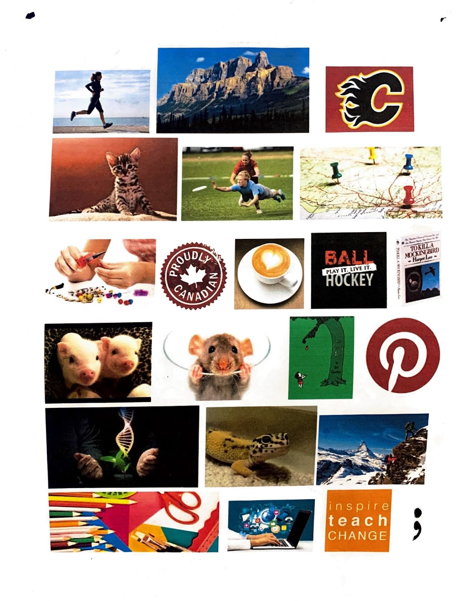
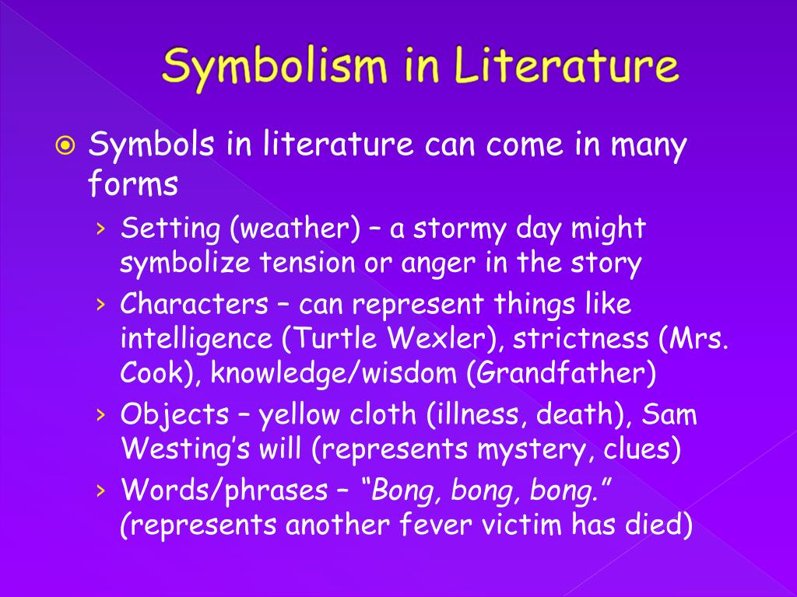
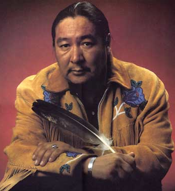
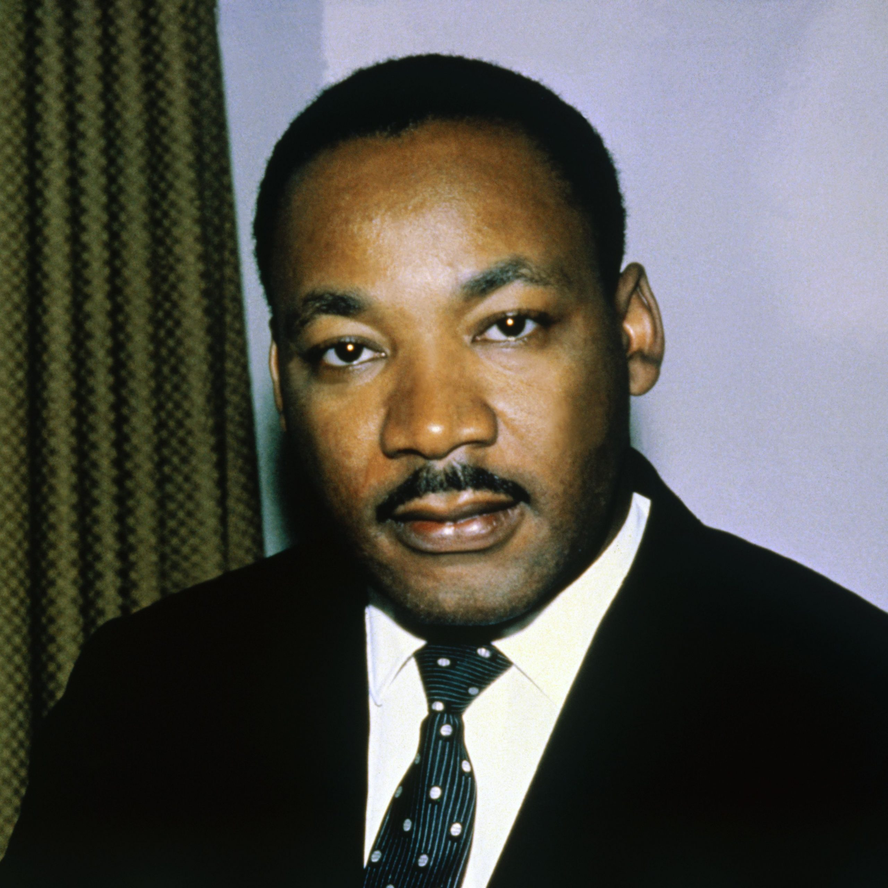
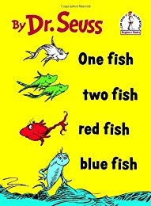
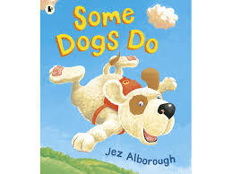
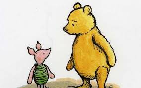
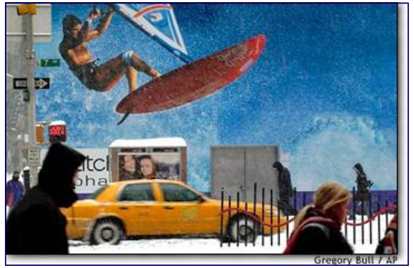

Introducing Yourself
To start this course, your teacher is interested in learning more about you as a person. Your handwriting, choice of words, expressions, speech and responses all contribute to the way you present yourself to others.
Your Task
Part A:
You are to introduce yourself to your teacher. Look at your camera roll. What 5-10 pictures represent you? Each photo you include should have a caption to help introduce you. Consider what photos you would want to show someone. A good place to look is in your Favourites album if you use one or your Instagram feed (or whatever social media platform you are currently using).
Take a few moments to brainstorm some ideas using a mind map. You may wish to use a similar format to the one that is in your assignment (Mind Map Example). There is an editable mind map also available in the Google Doc version of the assignment that you can use.
If you choose to not use your own photos, alternatively you can create a collage similar to the one shown below:

Part B:
Provide a response to the following questions.
- Who are you as a writer?
- Who do you want to be as a writer?
You can access the assignment on the next page.
When you have completed this assignment, book an appointment to meet with your teacher prior to continuing with the course.
Unit 1
The following lessons will help you develop some key skills that you will use throughout the course. It is important to be able to interpret what you read, but also be able to communicate your thinking about the texts that you read.
When you have worked through the lessons, you will then be ready to complete the assignment. Remember to refer back to your notes and/or the lessons to assist you while you are completing the assignment.
Remember to connect with your teacher often to help you progress in the unit - you do not have to do everything on your own.
Happy Learning!

What Do Good Readers Do?
You read for many different reasons, you read for entertainment, for information, and to learn. Sometimes reading is fun, but sometimes it's hard work. Reading is an active process. Think of it as a conversation between you - your thoughts, questions and experiences - and the words on the page
Below are 4 stages in the reading process, with some suggested activities for each stage. You can decide which activities would be most helpful for each reading task you undertake.
Stages in the Reading Process
1. Before Reading
Get to know the selection you are going to read.
2. Reading
Dive in and read through the text.
3. Rereading
Get more out of what you have read: to clarify your understanding of it and to gather information for class assignments.
4. After Reading
Reflect on what you've read, to show your understanding of it, and to use the information in a creative way.
1. Before Reading
Look over the text you are going to read and use some of the following strategies to get an idea of what it is like.
- make predictions based on the title, the name of the author, and any other works or illustrations included
- read any headings, subheadings, and captions
- ask questions about the topic
- examine any maps, photographs, graphs, charts, tables, illustrations, and pictures
- skim the table of contents and select the chapters or sections you find most interesting or useful
- recall what you already know about the subject or content
2. Reading
As you read, think about your own responses to the material using some of these strategies.
- just read and enjoy
- keep a reading journal
- think about or take notes on what you've read
- ask questions about anything you don't understand or don't agree with
- list words you don't know and look up their definitions
- discuss your responses to the selection with other readers
- make connections to what you know already or have read elsewhere
- pay attention to any pictures or images you think of as you read
***many of these are done when annotating the text you read
3. Rereading
At this stage, you might:
- read the selection aloud, either to yourself or to others
- review the selection again to fill in gaps in your notes
- create webs, charts, graphs, and other diagrams to organize information
- discuss questions about the selection with a partner
After Reading
You might:
- make a follow-up entry in your reading journal
- write an essay or prepare an oral presentation about the selection, or use information from the selection in an essay or report
- answer any questions or do any activities included with the selection
- discuss the selection with someone else
- review any notes you made while reading and revise them where necessary (annotations)
(this link opens in a new window/tab)

When we read, there are many strategies (skills) we can apply to help ourselves understand the material. Review some of the most common methods for following reading material easily below.
Common Reading Strategies
Skimming is one way of finding out the main ideas when we read. When you skim, you read quickly through a paragraph, page, chapter, or article to find a few (but not all) of the details. We are most likely to skim through material when we are looking for information about one particular idea and do not want to read through information that does not apply to what we want to learn. When we skim, we notice things such as:
- chapter titles
- paragraph headings
- words that stand out from most of the writing because of the way they look (words that are italicized, underlined, or bolded)
- the first sentence (usually the topic sentence) in a paragraph
- the last sentence (usually the concluding sentence) in a paragraph
- pictures, diagrams, or charts — their captions may help you to understand the main idea in the text
Scanning allows you to find a single fact, date, name, or a word quickly in a text without trying to read or understand all of the text. You may need that fact or word later to answer a question or to add detail to something you are writing. When you scan, you move your eyes quickly down a page or list to find one specific detail.
Forming questions can help us be sure we understand what we are reading. To form good questions, we must think about what we are reading. If there are things we are unsure about or do not understand, we can think of questions to ask ourselves as we read. This will help us to make sense of what we are reading.
Making a prediction about what is going to happen can help us to read and understand better. To make a reasonable guess about what might happen next in a story, we have to be paying close attention to the events. Making a prediction also helps us to see how well we understand a story. If our prediction is right, we can be sure we are following the story well. If our prediction is wrong, we know we may need to look more closely at the events of the story to see what we didn't understand.
Using text organizers can also help us to understand what we read, whether skimming or reading for details. Text organizers include the index, the table of contents, the titles of chapters or units, the glossary, the charts or illustrations (pictures) included, and the bibliography. These organizers can help us to understand the main ideas more clearly.
We may not need to apply all of these reading strategies at once, but the more ways we are willing to approach reading, the better our chances for a clear understanding.
Click on the links below for more information and other types of reading strategies that you can try!

Context Clues
Context clues help you to deduce what a word means in a sentence. While reading think about what information in the sentence is useful and what is not.
Types of Context Clues
There are four common types of context clues.
1. Definition – the word is defined directly and clearly in the sentence in which it appears. Ex. The arbitrator, the neutral person chosen to settle the dispute, arrived at her decision.
2. Antonym (or contrast) often signaled by the words whereas, unlike, or as opposed to. Ex. Unlike Jamaal’s room, which was immaculate, Jeffrey’s room was very messy.
3. Synonym (or restatement) – other words are used in the sentence with similar meanings. Ex. The slender woman was so thin, her clothes were too big for her.
4. Inference – word meanings are not directly described, but need to be inferred from the context. Ex. Walt’s pugnacious behavior made his opponent back down.
Watch the following video about using context clues when you read:
Homonyms, Homophones, & Homographs
Homonyms are words spelled or pronounced alike but different in meaning.
Homophones: sound alike, have different meaning and are spelled different
Homographs: spelled the same but have different meanings.
|
WORDS THAT BOTH SOUND THE SAME AND ARE SPELLED THE SAME are both homonyms (same sound) and homographs (same spelling). |
Commonly Misused Words
The following words are often misused when writing, but they are important to recognize so the meaning of what you are reading or trying to write is understood.
| affect/effect | ate/eight | be/bee | blew/blue | brake/break |
| cent/scent/sent | dear/deer | flour/flower | grate/great | hear/here |
| hole/whole | hour/our | its/it's | knew/new | threw/through |
| than/then | know/no | lay/lie | loose/lose | one/won |
| pail/pale | passed/past | plain/plane | read/red | right/write |
| road/rode | sail/sale | sea/see | sew/so/sow | some/sum |
| stair/stare | tail/tale | theirs/there's | their/there/they're | to/too/two |
| weak/week | which/witch | who's/whose | your/you're | pair/pare |
Their, There, and They're
These three words are often used interchangeably, but there is difference in their meanings.
If you find yourself coming up blank when trying to determine which one to use, take a hint from the spelling of each:
There has the word here in it. There is the choice when talking about places, whether figurative or literal.
Their has the word heir in it, which can act as a reminder that the term indicates possession. It also has an "i" which can remind you of the idea of "mine."
They’re has an apostrophe, which means it’s the product of two words: they are. If you can substitute they are into your sentence and retain the meaning, then they’re is the correct homophone to use.


Reading Directions
Reading is a thinking process. You must be actively involved and thinking about what you’re doing.
This is especially true when reading directions.
Directions require slow and careful reading and very often slow and careful rereading. Sometimes people will rush through directions in an effort to save a few seconds, only to waste valuable hours by doing unnecessary or incorrect work.
Like all sentences and paragraphs, sets of directions have key words and ideas. Often, portions of directions aren’t directions at all; they merely provide information. You must be able to extract exactly what you must do from a set of directions.
Underlining the important points in a set of directions can be very helpful. You might also want to use a highlighter to emphasize important words or steps. If the text is one you cannot highlight, then the use of stickies can help you maintain the focus of what you are doing.
Most directions involve a sequence or order that you must follow. If the steps aren’t numbered, add numbers yourself so that you completely understand the sequence. If you’re writing directions for someone else, be sure to indicate the order by numbering the steps or using words such as first, next, then, and finally.
Look carefully at diagrams, maps, or illustrations. A clear visual can often be more useful than a wordy explanation. For example, it’s usually easier to use a map to find a place than to read directions. When you’re writing directions for someone, create a clearly marked illustration to supplement the text.
When in doubt, if you think you are not understanding what you are being asked to do, always consult with your teacher to confirm rather than assuming.
Identifying Main Ideas
A main idea is like a thesis in an essay. It identifies the topic and tells the reader something important about the topic. All of the other sentences or paragraphs in the selection add details to support the main idea.
How to Recognize a Main Idea
Sometimes the main idea is stated in a topic sentence at the beginning or end of a selection. The main idea of a textbook chapter is usually identified by the chapter title, section headings, and highlighted/bolded key terms. But in some kinds of writing, the main idea may be implied rather than clearly stated.
To identify an implied idea, follow these steps:
- Identify the topic of the paragraph or selection. What is it about?
- Jot down or highlight each supporting detail.
- Synthesize the details into a single sentence. That single sentence should identify the main idea.
To be sure that you have identified the main idea, test it with these questions:
- Does every sentence in the paragraph or selection say something about the main idea you have identified?
- Are all of the details clearly related to the main idea you have identified?
If you answered yes to both of these questions, you have identified the main idea. If not, you need to review the details and revise your sentence.
A symbol is a person, place, thing or event that stands for or represents something else. For example, a flag is a symbol of a nation.
Writers often use objects, people, or animals in a symbolic way. For instance, a writer might use a tiny green shoot of grass growing in a ravaged landscape as a symbol of hope and rebirth.
Recognizing symbols will help you understand the literature you read.
Identifying Symbolism
When we study texts, we need to be aware of various ways that the creator will convey the message. We need to watch for messaging that is present, but not always really obvious. An example of this type of messaging is the use of symbolism. Symbolism is especially important in visuals, as the creator creates certain atmospheres and messages through the use of very purposefully chosen symbols to further enhance the meaning of the text.
Symbolism is the practice of representing abstract ideas with concrete symbols. The symbol is an abstract idea or item that represents a much larger idea than itself. Even though we may not realize it, we use symbolism often in our everyday lives! For the purpose of literary texts, symbolism will occur when the idea of the symbol is repeated within the text. For example, if a text creator explains an object or abstract idea with more detail than you would normally expect, this is a hint that it most likely will be symbolic within the text.
Watch this video to get a better idea of the characteristics of symbolism.

(this link opens in a new window/tab)

Theme is the controlling idea or central insight in a work of literature. It's a unifying generalization about life, either stated or implied in the literature. Here are some tips to help you understand theme:
- Theme isn't a summary of the main events of a story
- Theme doesn't teach a lesson as a moral does; however, it can be a message about life that the writer wants to present.
- Theme is generally a statement about human behaviour. It pertains specifically to the story in which it's found, but it also applies to similar situations in real life.
- Theme is always supported by the story. No details in the story will contradict any part of the theme.
- A theme may be stated in more than one way according to each person's own reactions to the work of literature.
- A theme shouldn't be expressed in an adage or proverb, such as "Pride goes before a fall" or "A stitch in time saves nine."
- Not every story has a strong theme, It may be difficult to find something significant about life in stories written primarily for entertainment.
When you are asked to state the theme of a selection, begin by deciding on the human behaviour that's being illustrated in the story. Clues to theme might be found in the main conflict, the outcome, and the title of the story.

Watch the following video to review how to identify themes:
The Paragraph
In this section you will learn about the structure of a paragraph, how to use a plan to help you write a paragraph, and how to identify the form and purpose of a paragraph.
What is a Paragraph?
A paragraph is a group of sentences written about one main idea or topic. The main idea is often expressed in a topic sentence. You start a new paragraph when you introduce a new idea, a new viewpoint, or a new speaker.
The Elements of a Paragraph
Every paragraph is unique. There are many ways to organize a paragraph, depending on your purpose and your topic or main idea. But every paragraph you write should have the following 3 elements.
- The Topic Sentence
- Supporting Sentences
- The Closing Sentence
The Topic Sentence
The topic sentence clearly identifies the main idea in a paragraph. It tells the reader what the paragraph is about. A topic sentence frequently appears near the beginning of a paragraph, although it need not be the first sentence. Sometimes the main idea of a paragraph is implied rather than stated outright in a topic sentence. But unless you are writing a story, it is a good idea to include a topic sentence in every paragraph you write.
Supporting Sentences
Supporting sentences, sometimes called the body, give more details about the main idea of the paragraph. The details should be presented in an order that is easy to follow. The details may be facts, examples, reasons, or added description.
The Closing Sentence
The closing sentence makes it clear that the paragraph is finished. A closing sentence sometimes restates the main idea of the paragraph. A closing sentence may also challenge the reader with a question, deliver a strong final detail or example, or provide a link to the main idea of the next paragraph.
The Structure of a Paragraph
The structure of a paragraph should demonstrate unity, order, and coherence.
Order means that the details in a paragraph are organized in a way that makes sense. Here are three ways to think about organizing the details in a paragraph.
- Logical order - organizes the details so one idea leads logically to the next, for example, least important to most important, general to specific, familiar to new or unknown.
- Space order - puts the details in an order relating to the physical world, for example, left to right, top to bottom, close to far away.
- Time order - puts the details in an order relating to time (hours, days, months and so on), for example, past to present, present to future, first to last.
Coherence means that all the ideas in a paragraph flow naturally from one to another. You can make the flow of ideas easy to follow by using linking or transition words, such as first, second, finally, then, now, to he left, to the right, before, later.
Notice that unity, order, and coherence of the water cycle paragraph above. It explains the steps in the water cycle. The details are arranged in time order, and the linking words used are as soon as, at once, later.
Writing a Paragraph
Planning a paragraph can make writing it easier. Like planning the route for a trip, planning a paragraph can help you avoid getting lost and wasting time. As mentioned previously, every paragraph has a main idea, a topic sentence, supporting details, and a concluding sentence. The steps below should make it easier to write a paragraph with all of these elements.
Steps to Writing a Paragraph
- Topic or Main Idea - It may be as short as a single word or as long as a sentence. If you need more than on sentence to describe your main idea, you need to narrow it down. Usually the topic is provided to you if you are completing a specific writing task.
- Type of Paragraph - once you have a topic for your paragraph, you must decide what type of paragraph to write. In the chart below you will see there are many types of paragraphs you could choose to write. You want to choose the type of paragraph that best suits your topic and your purpose for writing.
Types of Paragraphs
There are different types of paragraphs. The main idea and purpose of your paragraph will help you o decide what type of paragraph you want to write. And the type of paragraph will help you to decide how to organize your information.Purpose for Writing Writing Tips Linking Words Descriptive - to describe a person, place or thing
- to create a clear, vivid picture with words- organize your details in space order
- give sensory details: sight, sound, smell, taste, and touch- space-order words: above, below, across, beside, under, next to, inside, opposite, there, outside, around, among, in front of, on top of, over
- order-of-importance words: first, last, most, better, best, least, most important, above allNarrative - to tell the story of an event or a personal experience
- to tell a short story- organize your information in time order
- use personal details to enhance the story- time-order words: as soon as, at once, later, before, then, after, when, first, second, during, finally, today, yesterday, immediately, soon, next Comparing/Contrasting - to compare two things by telling how they are similar, how they are different, or both - choose several similarities or differences to compare
-compare one feature at a time
- use logical or space order- comparison words: besides, as well, also, again, in addition, likewise, similarly, both
- contrast words: however, but, although, instead, whereas, yet, neverthelessOpinion/Persuasive - to state an opinion and provide evidence to support it
- to persuade your audience to accept your point of view- state your opinion clearly first
- support your opinion with reasons an concrete examples presented in logical order
- give information to ack up your ideas
- acknowledge other point of view but defend your opinion- emphasis words: again, in fact, truly, for this reason, most important, finally
- clarifying words: for example, that is, for instance, such as, like
- summarizing words: finally, in conclusion, there fore, as a resultCause-and-Effect - to explain the cause-and-effect relationship among events
- to show how a cause leads to a number of effects- show how the causes and effects are related
- use time order to emphasize what happened first and what followed
- explain why things happened as they did- time-order words: (see above)
- cause-and-effect words: because, therefore, on account of, for this reason, as a result, consequently, soExplanatory/Instructive - to explain the steps in a process or give instructions - state your topic clearly
- explain the process step by step
- use examples or illustrations where appropriate- time-order words: (see above)
- words to add information: and, also, again, in addition to , next, finally, as well, furthermore - Topic Sentence - A topic sentence should identify your main idea and say something about it. Look at the following main ideas and topic sentences:
Main Idea + Your Thoughts = Topic Sentence medical research on animals + helps people with cystic fibrosis = How has research using animals helped those with CF? touring bikes + comfortable for long rides = A touring bike is a comfortable workhorse for long-distance riding. Mr. Digby, a character in Who Has Seen the Wind + he helped a lot of people in the novel = Mr. Digby demonstrates compassion in human behaviour. - Supporting Details - these can be developed in point form. List as many details as you can, and then cross out the weak ones and any that are off topic.
- Concluding Sentence - this sentence should provide a strong conclusion or climax to your paragraph. Writing it as you plan give you a clear ending to aim for.
Preparing Your Paragraph
Follow the steps described to create the outline for a paragraph. when you are satisfied with your outline, write a complete paragraph. Allow yourself the freedom to rearrange and revise your ideas as you write, but never lose track of your main idea.
Once you have written your paragraph, you can assess your writing using the following checklist:
| Writing a Paragraph Checklist | ||
| Did you: | 👍 | 👎 |
| choose the best type of paragraph for your topic? | ||
| make your main idea of the paragraph clear? Do you have a topic sentence? | ||
| make sure all supporting sentences are focused on the main idea? | ||
| present your ideas in an order that makes sense? | ||
| use linking words to show how your ideas relate to each other? | ||
| have a strong concluding sentence? | ||
| check for errors in spelling, grammar, and punctuation? | ||
Writing a Paragraph Tip!
If you raise a question in a paragraph or essay, make sure you answer it before the end of the paragraph or essay!
(this link opens in a new window/tab)
Who is your hero? Someone famous? Someone who saved a life? Someone who has made a significant contribution to society? Or, is it someone close to you whom you admire and look up to?
Heroes are present in all forms, and everyone knows at least one person whom they think of as being a hero. Some people have heroes who are fictional characters like Superman, other people have sports figures as their heroes. Firefighters and police officers are often seen as heroes. Heroes are people (and animals - dogs who rescue people) who are singled out for the extraordinary or noteworthy work that they do.
The following is a list of a few famous people who accepted difficult challenges and, through determination, overcame enormous obstacles. Their heroic efforts have helped or inspired others. Take note of these people as you will be asked to refer back to them in your assignment.
Terry Fox

Elijah Harper

Hailey Wickenheiser
Martin Luther King Jr.

Rosa Parks

Stephen Hawking

-ffcdd2bd61.jpg "hero definition")
this link opens in a new window/tab)
Visual Representations
Visual representations are found everywhere - photographs, drawings, road signs, billboards, television shows and movies. You see these representations all around you, but do you view them critically? Viewing is different than simple looking. To look at something is to be passive, whereas to view is to be active. To view is to look, to see, and to analyze and to interpret what you see. It is, above all, to be aware of what you are looking at and what message the visual conveys.
Viewing Pictures
  
When you were small, did you have a favourite book? What was in it that captured your imagination? The story? The pictures? The colours? The first book you “read” was probably a picture book with pictures that were designed to attract your attention and to tell a simple story. You likely told yourself a story as you looked at the pictures. Perhaps you even spoke to another person about what you saw. You may not have realized it at the time, but you were learning how to view pictures.
In this section you will continue to practice your viewing skills. You will investigate techniques that visual artists use to create pictures. You will find out how these techniques affect the way you respond to a picture. The knowledge that you gain will help you become an active viewer.
Before taking a picture, the photographer has to decide what to include in the picture. The photographer’s decision affects your response to the picture.
Subject
Look at the above photograph. What is the subject? The subject is the main focus, or what the photograph is about. In this picture the main subject could be the activity of surfing or we could say the subject is the surfer because they are in the middle of the photograph.
Where the subject is could also be the focal point of the photograph. There are several ways that a photographer can use to draw your attention to the focal point. Light and shadow can be used to highlight the focal point, and using a blurred image with a focused image.
Frame
A photographer uses the frame to include or leave out details in a photograph. Frame is the edges of a photograph/picture. The choice of frame for a picture, or lack of frame, can send a message. Natural frames are those that occur in the scene naturally and are used by the photographer/artist's as a frame or "box" for the picture. For example a tree trunk brought into the edge of a picture or the branch of a tree is a frame, while a door frame or window frame may also be used in such a way. In the photo below, the soldiers are framed by the wreckage of a shopping centre.

Foreground is the area/object closest to the viewer; in the picture below it is the ice.
Background is the area/object farthest from the viewer; in the picture below this would be the blurred sky and land.
Composition
Composition is the way in which the parts of something are arranged, especially the parts of a visual image. Look at the photo that follows and notice how the bird is centered and is framed by leaves. This is the composition.

Photographers and artists will also make use of textures, colour, repetition, and leading lines to portray a message in their visuals.
Notice the smooth texture and colour of the marbles in the foreground. This is in contrast to the grey checkered tiling on the ground.

The photo on the left shows the use of repetition; the photo on the right demonstrates use of leading lines in composition.


Symmetry and Juxtaposition
Symmetry is the idea of sameness and balance resulting in harmony and beauty. This is demonstrated in the photos below.

Juxtaposition, on the other hand, is the placing of objects side by side to accentuate the differences or to provide contrast.
When you put a black type on a white paper you get a strong contrast which makes the type stand out clearly. Likewise, if you put two objects that are very different side by side, the startling differences will make the objects more prominent. For example, if you see a picture of a pristine meadow, with beautiful flowers and peaceful, calming lighting, muted colors and in the middle of the meadow is an old oil can, rusted and jagged, the oil can will stand out because it clearly contrasts or juxtaposes with the scene.
Look at the following image:

The juxtaposition in the photo above is an ironic one. It is clearly a photo taken on a cold winter day; the setting juxtaposed against an ad with a scantily-clad man wind surfing.
Lighting
Lighting is used to create mood and feeling. It is the amount and kind of light visible in the picture. Lighting may be artificial or natural, bright or soft, and there may be contrast between areas of brightness and shadow.

Historically, painters and photographers have used light for symbolic purposes to say certain things about characters and settings. The use of light versus dark is perhaps the oldest and most obvious lighting technique. Generally, light is used to highlight ideas of security, virtue, and truth, whereas dark shots are used to highlight uncertainty, fear, evil, or loneliness.
Lighting creates mood. For example, with harsh lighting, everything is exposed, while when soft lighting is employed it may be suggestive of being romantic or gentle, or of something being hidden.
Colour
The use of colour may create mood or atmosphere, suggest genre, illustrate a specific theme or moment, be symbolic, or suggest a time period. A black and white choice may evoke a period, recreate a style, produce a specific atmosphere or mood.
What is colour good for?
A designer should not use colour without a specific plan or goal. Here are some principle uses of colour:
- conveying emotion and meaning
- changing perception of space
- changing apparent size
- showing similarities and differences
- breaking the visual field into chunks
- linking spatially separated objects together
- attracting attention
- creating emphasis
- smoothing to improve image quality
- creating aesthetic and emotional appeal
How does colour convey meaning?
Colour can also be used to convey specific meaning such as warning (red), caution (yellow), safety (green), etc. There are some standards on the assignment of colors to meaning. The OSHA (Occupational Safety and Health Agency), for example, has standardized the following:
red: danger
orange: warning
yellow: caution
blue: notice
green: safety
Various sources have suggested other standard meanings signalled by colour, which are:
| red | urgency, passion, heat, love, blood |
| purple | wealth, royalty, sophistication, intelligence |
| blue | truth, dignity, power, coolness, melancholy, heaviness |
| black | death, rebellion, strength, evil |
| white | purity, cleanliness, lightness, emptiness |
| yellow | warmth, cowardice, brightness, friendship |
| green | nature, health, cheerfulness, environment, money, vegetation |
Primary colour choices such as red, blue, yellow, may convey a sense of clarity or newness.
Muted colours such as greys, pastels, and mauves may leave a feeling of sadness, loss, or depression.
Cool colours (green, blue, violet) suggest peace, aloofness, or tranquility.
Warm colours (red, orange, yellow) suggest violence, aggressiveness, or seduction.
Be warned that use of colour to convey meaning is very tricky. Of course, colour-meaning connections do not always transfer across cultures, but there can be difficulties even within Western culture. Colour meanings can conflict. For example, blue can mean power or melancholy, two ideas which don’t seem compatible.
Camera Angle
The angle at which a subject is shot in any visual media can dramatically affect the meaning we attribute to that subject. The camera angle has a strong effect on the mood or feeling of a photograph. The photographer may look down from a high angle, up from a low angle, or straight at a subject.
There are five basic angles used to shoot visual media. The angles are determined by where the camera is placed rather than how a subject looks in the photograph.
• Bird's-Eye View - The camera is placed virtually on top of the subject looking down towards the subject and the ground
• High Angle - positions the camera above eye-level, looking down on the subject, which consequently appears insignificant, weak, helpless, or small according to how extreme the angle is.
• Eye-Level - the camera is at roughly the same level an observer might view the visual. This angle creates the impression of neutrality.
• Low Angle - the camera is looking up at the subject, who then appears important, powerful, or domineering, again depending on how exaggerated the angle is.
• Oblique Angle - usually used in film rather than in photographs (you will look at this later in the course)
All of these terms can be used when discussing a visual medium. The main idea that is conveyed by a picture or photograph is mostly expressed through the subjects themselves. Take into account the expressions on peoples' faces, where they stand or sit in relation to one another, what their body language conveys. All of these details should be examined to decide what the idea being conveyed to you is and how that idea is conveyed.
In the following lessons you will learn how to effectively analyze a photograph, using the techniques you have learned so far.
Effective Analysis of a Photograph
Photographers create meaning and impact in their photographs through the choices they make with visual elements and design.
When you are going to analyze a photograph, the following steps will help you:
Step 1: List or Label
You will annotate the photograph by writing down every detail that you see. What stands out? What is the focal point? What is in the foreground and background? What visual techniques are being used (i.e. camera angle, colour, composition, lighting, etc.)
You should get into the habit of annotating directly on the photograph, either by writing on the photo, using sticky notes, or making use of online annotating tools.
Step 2: Complete PACES
Use the following acronym to help you remember questions you should ask yourself when you are studying a photograph, painting, or illustration.
 |
People |
|
 |
Angle |
|
 |
Colours/ |
|
 |
Effect |
|
 |
Symbol/ Suggestion |
|
Example

Carefully view the photo of a fire scene above, and analyze it using the steps presented in this lesson.
Step 1

Step 2
| People |
|
| Angle |
|
| Colours/Contrast |
|
| Effects |
|
| Symbols/Suggestions |
|
NOTE: By taking a different attitude toward the fire, one might suggest there is a strange and spectacular beauty to be found in it. If that were the case, then the effects of the camera shot/angle, lighting and colours would change, as would the theme. When you analyze a photo there is no "correct" answer, but any answer that is suggested MUST be supported by detail (hint: look at your annotations).
(this link opens in a new window/tab)
Visual Texts Also Tell Stories!
When we read literary texts, we can learn about others, share experiences, and make personal connections. When we view visual texts, we can also learn about people, share experiences, and make connections to the text. The visual, like a short story, also conveys intended meaning and messages for the viewer.
Visual Reflection
When we view and reflect about our ideas and impressions of a visual text, we are creating a visual reflection, just as we might do for a written literary text. In a written visual reflection, we can write about any ideas or impressions that are inspired and supported by the visual text (you will learn how to do this later in the unit). As a viewer you will bring your own life experience to the visual text, and other viewers may connect in very different ways to the same visual text. In this way, a visual reflection allows you the freedom to express your own personal connections in a variety of ways. In this sense, a personal reflection is quite unique to the individual.
Responding Personally
Our world is full of various types of texts to which we are continually responding. For example, if we were to go out shopping at a traditional store, we would be reacting to the people around us as well as reacting to the visual and written text that one sees while shopping. As our minds take in the texts around us, we absorb and then respond personally, within our own minds to our environment. There are no additional requirements for us, other than we experience, absorb, and respond. This type of personal response could be considered to be simple and natural. When we encounter texts, we think about them, and we have feelings about them. Thus, we are responding personally to texts.
When responding personally, the viewer has a wide array of choices as to what type of perspective they will use for the response. When we write personally, we might think about becoming one of the following:
- A character within the visual
- A third party person looking at the visual
- A photographer
- A reporter
- A person experiencing a memory
- any other relevant point of view
Writing a Visual Reflection
After you have completed Step 1 and Step 2 (analyzing a visual), Step 3 requires you to determine what format you will use for your reflection and create an outline to plan what you will write.
You will be asked: What ideas and impressions does the photograph suggest to you? Consider the context, and develop your response by referring to the details in the photograph.
Step 3: Format Choice and Outline
In your writing, you may respond personally, critically, and/or creatively. So, what does this mean?
- A personal response can be a personal response essay where you discuss a theme that you come up with that the photograph suggests to you and then you relate a specific example from your life that goes with that theme. Connections can be to your friends, your family, your job, your school, your hobbies, your country, sports, places you have travelled, etc.
- A critical response is where you stick to focusing on the details provided in the picture that effectively enhance the theme that you come up with. It is formatted like a mini-essay. Analyze the details of the visual and discuss how they prove your theme or "big idea."
- A creative response can be a story, a script, a monologue, an interview, or even a rant … but whatever form you choose, it must still relate to the theme that you come up with. Note: you CANNOT write a poem.
Suggestions
As you review your annotations and PACES, consider all the details of the visual text(s). Then ask yourself which details are most significant to you. Consider any introductory comments, captions, and footnotes that accompany the text(s). This information may help you in your understanding of the text(s) and the context.
The details you select should support your development of the ideas and impressions you choose to discuss. This focus will help you to establish and sustain your unifying effect, which you will make clear by statement or implication. Your observations and conclusions about the visual text(s) may include discussion of emotions, attitudes, situations, and themes presented in or inspired by the text(s).
An important point to remember is that there is no “correct” answer or approach to the Visual Reflection Assignment. When choosing the prose form that will best communicate your ideas and impressions, consider the ideas and support that will allow you to compose the most effective response.
Organize your writing in a clear, focused manner. Have a plan for presenting your ideas and impressions. Different prose forms, of course, have their own unique characteristics. There is a difference in style between a story and a script, for example.
Regardless of the prose form you choose, make sure that you support your ideas with adequate and appropriate details from the visual text. Keep in mind your controlling idea (big idea) as you write so you create a unifying effect throughout your reflection.
Things like spelling, punctuation, and sentence structure are not "marked" in this assignment. What does count is the voice you create in your writing. Voice is created through vocabulary and word choice. You want your voice to match your prose form. So, if you write a critical reflection, you voice would be more formal and analytical. If you were to write a creative letter, the voice would suit and fit the character of the person who is writing the letter.
The following pages provide templates that you can use if you are writing personally or critically.(this link opens in a new window/tab)
How to Write a Personal Visual Reflection
If you are not sure where to begin with formatting a visual reflection, the following can be used as a template if you choose to respond personally.
Personal Visual Reflection Format
In the first paragraph you will focus on the analysis you completed using your annotations and PACES.
Paragraph 1: What do you see?
- Describe your initial impressions of the photograph-what attracted your attention?
- Note the visual contrasts, and what they tell you
- Express what idea you think the photographer was trying to convey
- Where applicable, comment on some visual techniques used within the photograph: body language, facial expressions, the foreground, background, strong colours, etc.
- Include any questions that come to mind and the possible answers you formulate because of the clues you see in the picture.
Paragraph 2: Connection to Your Life
Discuss how the ideas conveyed in the photograph connect to your own life (or personal experience).
Paragraph 3: Connection to the World
- Discuss the BIGGER ISSUE conveyed by the photograph and how it connects to the world and society.
- Include ideas that you have learned through Social Studies, or other courses. Some possible examples are:
- Homelessness/Poverty
- Government corruption
- War
- Refugees
- Foreign aid
- Kindness/trust/giving hope
- Gov’t funding/lack of funding
- Terrorist groups
- Safety/Danger
- Perseverance
- Overcoming Challenges
- Survival
- Environmental issues
- Youth versus adulthood
- etc.
There is no correct way to complete this reflection. The outline above gives you a way to complete this piece of writing in a straightforward manner. Remember if you choose to write in a different prose, make sure you are using the appropriate format and tone.
(this link opens in a new window/tab)
How to Write a Critical Visual Reflection
If you choose to write critically for your visual reflection, the following format can be used.
Critical Visual Reflection Format
Opening Paragraph
- start your response with a statement that pinpoints the idea that you will discuss: This photograph illustrates the idea of ___________ (capture the photograph's suggestion with one theme word).
- then briefly explain what is happening in the photograph. What is the situation? Setting? Conflict?: In this photograph, there is ________ (a short photo summary)
- then expand your theme word (the word you wrote for the symbols/suggestion) into the theme statement: The photograph illustrates that __________________ (this should be a statement that conveys you main message of the photograph). THIS IS VERY IMPORTANT BECAUSE IT IS YOUR CONTROLLING IDEA FOR YOUR REFLECTION.
Developing Paragraph
- support your theme statement with details from the photograph (annotations and PACES)
- be sure to explain what the detail is in the photo and then explain what the detail means or symbolizes
Closing
- end your response with one or two sentences that summarize your theme - you want to remind the reader what your controlling idea is so you have a unifying effect throughout your reflection

(this link opens in a new window/tab)
Unit 1 Conclusion
You have now completed the content for the lessons in Unit 1.
Next Steps
- Submit your assignment for feedback from your teacher
- Move on to Unit 2 while you wait for your assignment to be returned
- When you receive your feedback, determine if you would like to attempt another visual reflection should you not be satisfied with your mark